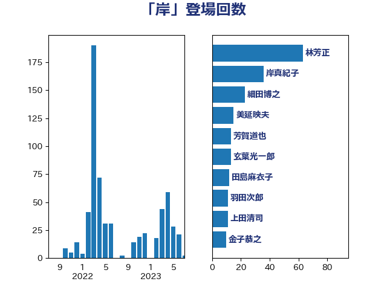

単語「岸」

| 林芳正 | 自由民主党 | 63 回 |
| 岸真紀子 | 立憲民主党 | 36 回 |
| 細田博之 | 自由民主党 | 23 回 |
| 美延映夫 | 日本維新の会 | 15 回 |
| 芳賀道也 | 国民民主党 | 13 回 |
| 玄葉光一郎 | 立憲民主党 | 13 回 |
| 田島麻衣子 | 立憲民主党 | 12 回 |
| 羽田次郎 | 立憲民主党 | 11 回 |
| 上田清司 | 国民民主党 | 11 回 |
| 金子恭之 | 自由民主党 | 10 回 |
| 小西洋之 | 立憲民主党 | 10 回 |
| 岸田文雄 | 自由民主党 | 9 回 |
| 穀田恵二 | 日本共産党 | 8 回 |
| 川田龍平 | 立憲民主党 | 8 回 |
| 山本順三 | 自由民主党 | 8 回 |
| 山本太郎 | れいわ新選組 | 8 回 |
| 小沢雅仁 | 立憲民主党 | 8 回 |
| 井上哲士 | 日本共産党 | 8 回 |
| 馬場成志 | 自由民主党 | 7 回 |
| 松原仁 | 立憲民主党 | 7 回 |
| 宮沢洋一 | 自由民主党 | 7 回 |
| 宮本徹 | 日本共産党 | 6 回 |
| 大塚拓 | 自由民主党 | 6 回 |
| 伊藤俊輔 | 立憲民主党 | 6 回 |
| 鬼木誠 | 立憲民主党 | 5 回 |
| 音喜多駿 | 日本維新の会 | 5 回 |
| 鈴木英敬 | 自由民主党 | 5 回 |
| 紙智子 | 日本共産党 | 5 回 |
| 末松義規 | 立憲民主党 | 5 回 |
| 末松信介 | 自由民主党 | 5 回 |
| 太栄志 | 立憲民主党 | 5 回 |
| 吉田宣弘 | 公明党 | 5 回 |
| 海江田万里 | 立憲民主党 | 4 回 |
| 新垣邦男 | 立憲民主党 | 4 回 |
| 斎藤アレックス | 国民民主党 | 4 回 |
| 徳永久志 | 無所属 | 4 回 |
| 岡田克也 | 立憲民主党 | 4 回 |
| 山田宏 | 自由民主党 | 4 回 |
| 山口俊一 | 自由民主党 | 4 回 |
| 尾辻秀久 | 無所属 | 4 回 |
| 前原誠司 | 国民民主党 | 4 回 |
| 高橋千鶴子 | 日本共産党 | 3 回 |
| 舟山康江 | 国民民主党 | 3 回 |
| 緒方林太郎 | 無所属 | 3 回 |
| 篠原豪 | 立憲民主党 | 3 回 |
| 竹詰仁 | 国民民主党 | 3 回 |
| 石橋通宏 | 立憲民主党 | 3 回 |
| 河野義博 | 公明党 | 3 回 |
| 森山浩行 | 立憲民主党 | 3 回 |
| 松本剛明 | 自由民主党 | 3 回 |
| 掘井健智 | 日本維新の会 | 3 回 |
| 山際大志郎 | 自由民主党 | 3 回 |
| 山添拓 | 日本共産党 | 3 回 |
| 小沼巧 | 立憲民主党 | 3 回 |
| 宮本岳志 | 日本共産党 | 3 回 |
| 古川俊治 | 自由民主党 | 3 回 |
| 勝部賢志 | 立憲民主党 | 3 回 |
| 佐藤正久 | 自由民主党 | 3 回 |
| 中川郁子 | 自由民主党 | 3 回 |
| 高橋光男 | 公明党 | 2 回 |
| 青木一彦 | 自由民主党 | 2 回 |
| 長友慎治 | 国民民主党 | 2 回 |
| 鈴木貴子 | 自由民主党 | 2 回 |
| 金城泰邦 | 公明党 | 2 回 |
| 野田国義 | 立憲民主党 | 2 回 |
| 赤嶺政賢 | 日本共産党 | 2 回 |
| 豊田俊郎 | 自由民主党 | 2 回 |
| 蓮舫 | 立憲民主党 | 2 回 |
| 菅直人 | 立憲民主党 | 2 回 |
| 比嘉奈津美 | 自由民主党 | 2 回 |
| 枝野幸男 | 立憲民主党 | 2 回 |
| 松沢成文 | 日本維新の会 | 2 回 |
| 新妻秀規 | 公明党 | 2 回 |
| 斎藤嘉隆 | 立憲民主党 | 2 回 |
| 打越さく良 | 立憲民主党 | 2 回 |
| 川崎ひでと | 自由民主党 | 2 回 |
| 島尻安伊子 | 自由民主党 | 2 回 |
| 岩本剛人 | 自由民主党 | 2 回 |
| 岡田直樹 | 自由民主党 | 2 回 |
| 小野寺五典 | 自由民主党 | 2 回 |
| 大野泰正 | 自由民主党 | 2 回 |
| 國場幸之助 | 自由民主党 | 2 回 |
| 吉田とも代 | 日本維新の会 | 2 回 |
| 伊波洋一 | 無所属 | 2 回 |
| 仁比聡平 | 日本共産党 | 2 回 |
| 中曽根康隆 | 自由民主党 | 2 回 |
| 三原じゅん子 | 自由民主党 | 2 回 |
| 齋藤健 | 自由民主党 | 1 回 |
| 鶴保庸介 | 自由民主党 | 1 回 |
| 高橋はるみ | 自由民主党 | 1 回 |
| 高木啓 | 自由民主党 | 1 回 |
| 高木かおり | 日本維新の会 | 1 回 |
| 高市早苗 | 自由民主党 | 1 回 |
| 須藤元気 | 無所属 | 1 回 |
| 阿達雅志 | 自由民主党 | 1 回 |
| 長谷川岳 | 自由民主党 | 1 回 |
| 長坂康正 | 自由民主党 | 1 回 |
| 鈴木宗男 | 日本維新の会 | 1 回 |
| 金子恵美 | 立憲民主党 | 1 回 |
| 野村哲郎 | 自由民主党 | 1 回 |
| 辻元清美 | 立憲民主党 | 1 回 |
| 足立康史 | 日本維新の会 | 1 回 |
| 谷公一 | 自由民主党 | 1 回 |
| 西銘恒三郎 | 自由民主党 | 1 回 |
| 西田実仁 | 公明党 | 1 回 |
| 萩生田光一 | 自由民主党 | 1 回 |
| 荒井優 | 立憲民主党 | 1 回 |
| 茂木敏充 | 自由民主党 | 1 回 |
| 篠原孝 | 立憲民主党 | 1 回 |
| 礒崎哲史 | 国民民主党 | 1 回 |
| 石川大我 | 立憲民主党 | 1 回 |
| 田村貴昭 | 日本共産党 | 1 回 |
| 田村智子 | 日本共産党 | 1 回 |
| 猪瀬直樹 | 日本維新の会 | 1 回 |
| 渡辺周 | 立憲民主党 | 1 回 |
| 浜田聡 | NHK党 | 1 回 |
| 浜口誠 | 国民民主党 | 1 回 |
| 河西宏一 | 公明党 | 1 回 |
| 柴田巧 | 日本維新の会 | 1 回 |
| 柳ヶ瀬裕文 | 日本維新の会 | 1 回 |
| 松野博一 | 自由民主党 | 1 回 |
| 松村祥史 | 自由民主党 | 1 回 |
| 松川るい | 自由民主党 | 1 回 |
| 本庄知史 | 立憲民主党 | 1 回 |
| 木村次郎 | 自由民主党 | 1 回 |
| 朝日健太郎 | 自由民主党 | 1 回 |
| 斉藤鉄夫 | 公明党 | 1 回 |
| 志位和夫 | 日本共産党 | 1 回 |
| 後藤茂之 | 自由民主党 | 1 回 |
| 平木大作 | 公明党 | 1 回 |
| 岸信千世 | 自由民主党 | 1 回 |
| 山田勝彦 | 立憲民主党 | 1 回 |
| 小池晃 | 日本共産党 | 1 回 |
| 小森卓郎 | 自由民主党 | 1 回 |
| 小林鷹之 | 自由民主党 | 1 回 |
| 小山展弘 | 立憲民主党 | 1 回 |
| 安江伸夫 | 公明党 | 1 回 |
| 大西健介 | 立憲民主党 | 1 回 |
| 塚田一郎 | 自由民主党 | 1 回 |
| 嘉田由紀子 | 無所属 | 1 回 |
| 和田有一朗 | 日本維新の会 | 1 回 |
| 古川禎久 | 自由民主党 | 1 回 |
| 加藤勝信 | 自由民主党 | 1 回 |
| 佐藤啓 | 自由民主党 | 1 回 |
| 伊藤岳 | 日本共産党 | 1 回 |
| 仁木博文 | 無所属 | 1 回 |
| 三浦信祐 | 公明党 | 1 回 |
| おおつき紅葉 | 立憲民主党 | 1 回 |